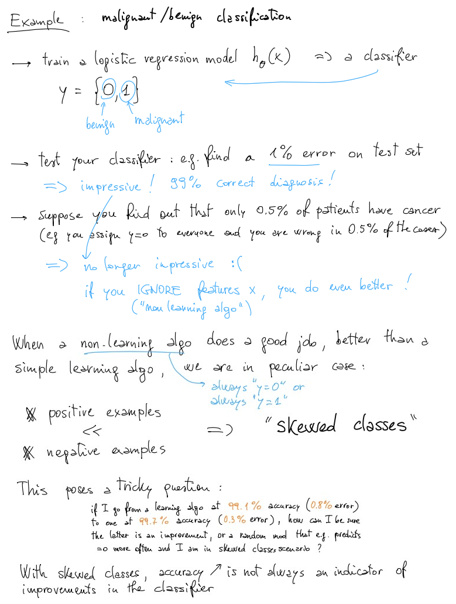
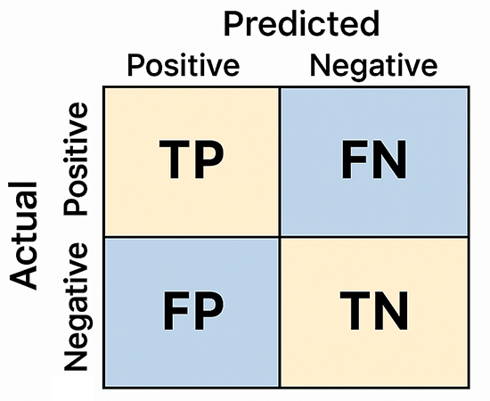
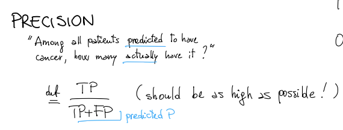
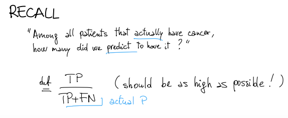
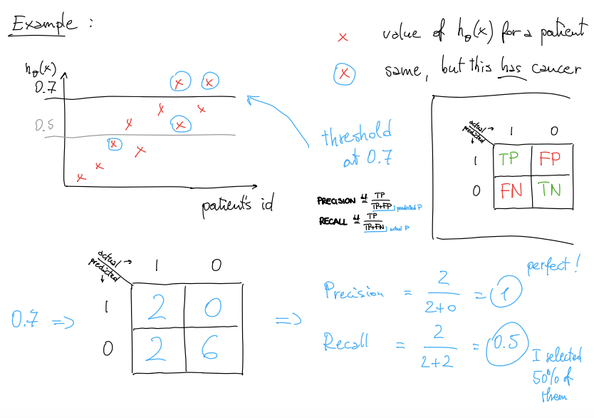
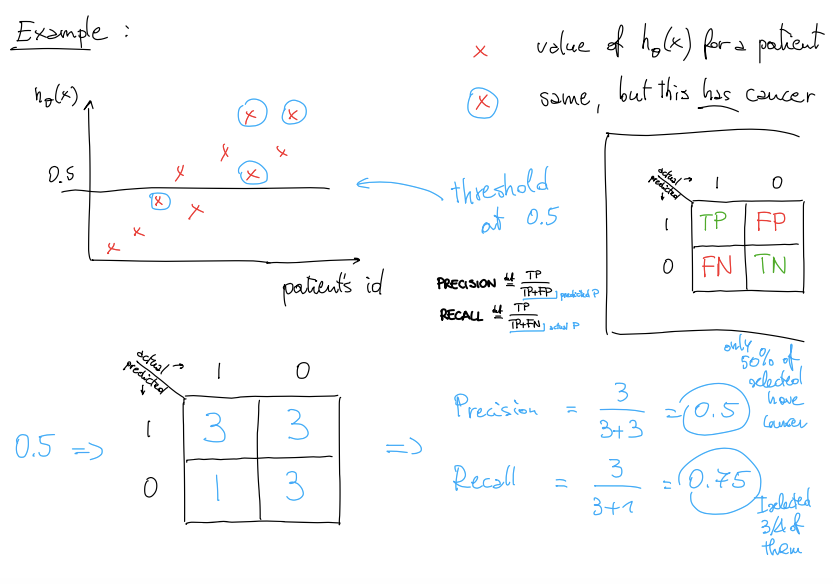
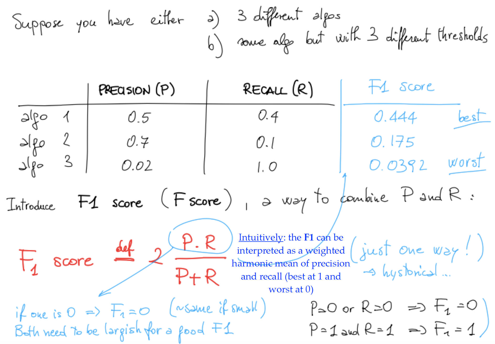
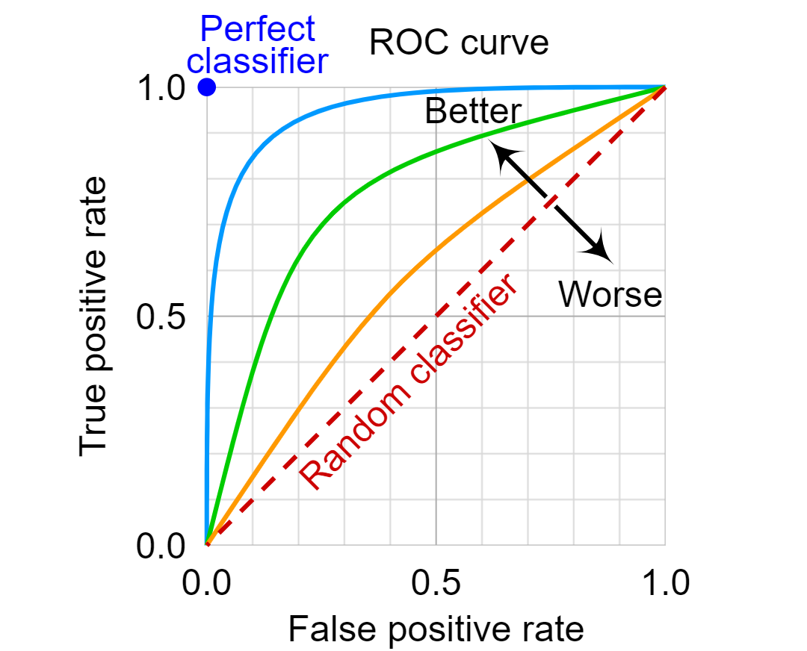
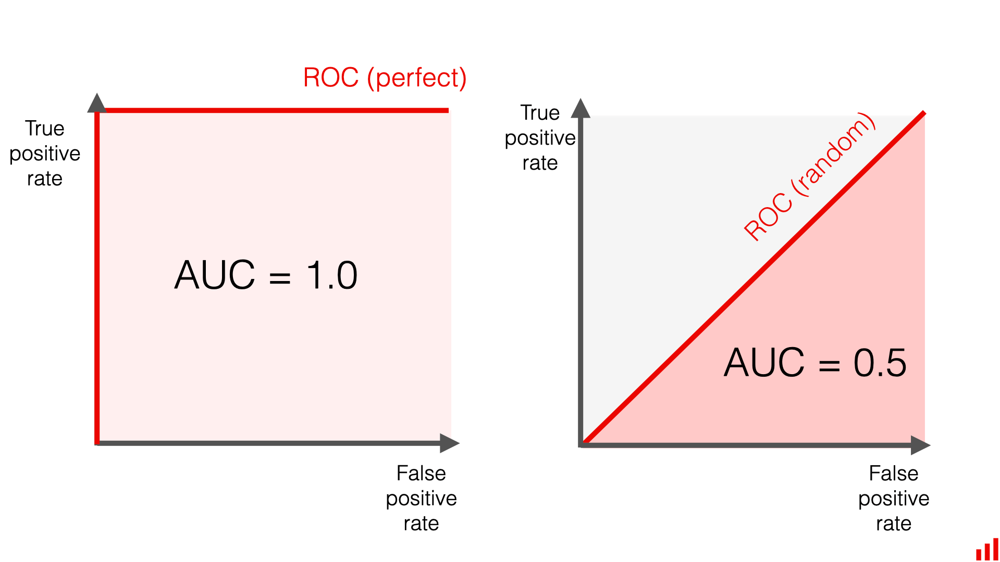
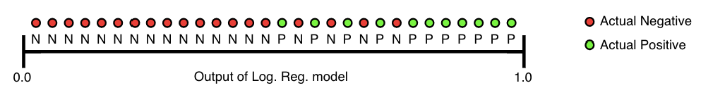

Big Picture
Most of the time, using a single number such as accuracy feels natural. But some classification problems are fundamentally uneven: the class we care about is rare, and the majority class dominates the dataset.
The key example throughout the lecture is medical diagnosis. In that kind of setting, missing a rare but important positive case can matter much more than achieving a superficially high average accuracy.
Skewed Classes
A dataset has skewed classes when one class is much more common than the other.
This happens often in real scientific and practical problems: rare diseases, severe earthquakes, fraudulent transactions, or any setting where the event of interest is not the majority of what appears in the data.

Why Accuracy Fails in Imbalanced Data
Accuracy is often fine, but it becomes misleading when the class of interest is very rare.
Suppose only 0.5% of patients in a dataset actually have cancer. A
trivial “classifier” that predicts y = 0 for everyone
would still be correct 99.5% of the time. That looks excellent by
accuracy alone, but it is useless for finding actual cancer cases.
What accuracy says
“99.5% correct” sounds impressive.
What reality says
The model failed to identify every single rare positive case.
The Confusion Matrix
To evaluate a classifier properly, we count predictions by type instead of reducing everything to a single accuracy number too early.

Think of it as: what the model predicted vs what actually happened.
| Term | Meaning |
|---|---|
| TP | Actual positive and predicted positive |
| FP | Actual negative but predicted positive |
| FN | Actual positive but predicted negative |
| TN | Actual negative and predicted negative |
Once this matrix is available, performance metrics become counts and ratios rather than vague impressions.
Precision
Precision asks: among all examples predicted as positive, how many are actually positive?
Precision becomes important when false positives are costly. In medical or operational settings, a high precision means that when the model raises a positive alert, it is usually right.

Recall
Recall asks: among all actual positive examples, how many did the classifier successfully find?
Recall becomes important when false negatives are costly. If missing an actual positive case is dangerous, then a high recall is often more valuable than a high precision.

Precision vs Recall Intuition
High precision
Positive predictions are trustworthy. The model is careful before saying “yes”.
High recall
Few real positives are missed. The model is aggressive in trying to catch all important cases.
By convention, when classes are skewed, we usually define
y = 1 as the rare or important class — the one we
most want to detect.
The Precision–Recall Trade-off
Precision and recall are both useful, but pushing one upward often pulls the other downward.
Most classifiers output a score or probability. The final label depends on a threshold, often 0.5 by default. If we change that threshold, we also change the balance between false positives and false negatives.
That is why the lecture stresses use-case awareness: the same model can be tuned differently depending on whether we value caution or coverage.
Threshold Tuning
Increasing the classification threshold makes the classifier more conservative; lowering it makes the classifier more inclusive.
- fewer predicted positives
- higher precision
- lower recall
- more predicted positives
- lower precision
- higher recall


The practical lesson is not “always maximize one metric.” It is to match the metric and threshold to the cost of mistakes in the real task.
F1 Score
Precision and recall give two different numbers. Sometimes it is helpful to combine them into a single score.
The F1 score is the harmonic mean of precision and recall. It rewards models that balance both, and it punishes extreme imbalance between them.
Why not a simple average?
A simple average can hide the fact that one metric is very weak.
Why harmonic mean?
The harmonic mean stays low when either precision or recall is low, so balance matters.

ROC (Receiver Operating Characteristic) Curves
Threshold tuning reveals a broader idea: instead of checking only one threshold, we can inspect how a classifier behaves across all thresholds.
The ROC curve plots:
- True Positive Rate (TPR) on the vertical axis
- False Positive Rate (FPR) on the horizontal axis

AUC
Once we have an ROC curve, we can summarize it with a single value: the Area Under the Curve.

AUC measures how well the classifier separates positive and negative examples overall, without committing to one single threshold.
Excellent separation between classes.
Performance close to random guessing.
Useful for comparing models independently of a fixed threshold.

If most positive examples appear to the right of negative ones (higher predicted scores), the model separates the classes well → high AUC.
If positives and negatives are mixed randomly, the ranking is unreliable → AUC near 0.5.
Why AUC Is Popular (and Its Limits)
AUC is widely used because it captures model performance across all thresholds and focuses on ranking quality rather than fixed decisions.
- Threshold-invariant: evaluates the model across all possible classification thresholds
- Scale-invariant: measures how well predictions are ranked, not their absolute values
AUC tells us how good the model is at ordering examples from most likely positive to least likely, without committing to a specific decision boundary.
Important caveats
In many real applications, the cost of mistakes is not balanced. For example, in spam detection, false positives (important emails marked as spam) are often worse than false negatives.
In these cases, choosing the right threshold matters more than evaluating all thresholds equally — so AUC may not reflect what we truly care about.
AUC evaluates ranking, not probability accuracy.
A model might rank examples correctly but still produce poorly calibrated probabilities, which can be problematic when decisions depend on actual probability values.
In highly imbalanced datasets, Precision–Recall curves are often more informative than ROC curves.
Study Material
Use the slide deck for the cancer example, confusion matrix construction, precision/recall trade-off visuals, threshold illustrations, and the ROC/AUC overview.
View PDF →Use the transcript for the lecturer’s intuition on why skewed classes break accuracy, how threshold choice depends on the application, and why different metrics matter in real decisions.
View PDF →Quick Review Quiz
1. Why can accuracy be misleading in skewed datasets?
Because a model can achieve very high accuracy by always predicting the majority class, while completely missing the rare class we actually care about.
2. What does TP stand for in a confusion matrix?
True Positive: an example that is actually positive and is predicted as positive by the model.
3. What does precision measure?
Precision measures how many predicted positive examples are actually positive.
4. What does recall measure?
Recall measures how many actual positive examples are successfully found by the model.
5. What usually happens when the classification threshold is increased?
Precision usually increases and recall usually decreases, because the classifier becomes more conservative about predicting positives.
6. In what kind of application is high precision especially important?
High precision is especially important when false positives are costly, such as selecting patients for invasive surgery.
7. In what kind of application is high recall especially important?
High recall is especially important when missing a true positive is costly, such as medical screening or early detection tasks.
8. Why is the F1 score useful?
Because it combines precision and recall into one number while penalizing models that are strong on one metric but weak on the other.
9. What does an ROC curve plot?
It plots the True Positive Rate against the False Positive Rate across different classification thresholds.
10. What does AUC represent?
AUC represents the area under the ROC curve and summarizes how well a classifier separates positive and negative classes across thresholds.
11. A classifier produced the following results: TP = 40, FP = 10, FN = 20. What is the precision?
Precision = TP / (TP + FP) = 40 / (40 + 10) = 40 / 50 = 0.8
12. Using the same classifier: TP = 40, FP = 10, FN = 20. What is the recall?
Recall = TP / (TP + FN) = 40 / (40 + 20) = 40 / 60 ≈ 0.67
13. If false positives decrease while everything else stays the same, which metric improves: precision, recall, or both?
Precision improves.
Precision = TP / (TP + FP). If FP decreases, the denominator becomes smaller, so precision increases. Recall does not change because it depends on FN, not FP.
14. Consider the following confusion matrix:
Predicted
1 0
Actual 1 30 10
Actual 0 20 40
What are the precision and recall?
TP = 30, FP = 20, FN = 10
Precision = 30 / (30 + 20) = 30 / 50 = 0.6
Recall = 30 / (30 + 10) = 30 / 40 = 0.75